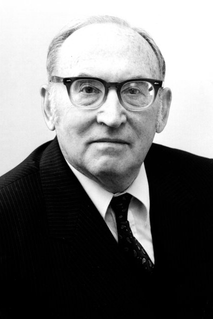

|  |
1967 год Maurice V. Wilkes (1913-2010) «Профессор Maurice V. Wilkes, более всего известный как проектировщик EDSAC, первого компьютера, допускающего внутреннее хранение программ. Построенный в 1949, EDSAC использовал память на линиях задержки. Он также известен, в соавторстве с David J Wheeler и Stanley Gill как автор книги «Preparation of Programs for Electronic Digital Computers», 1951 года, в которой вводится важнейшее понятие библиотеки» |
Страна: Великобритания
Образование: Доктор философии в области физики, Кембриджский университет, 1936
О лауреате
Для EDSAC 2, последователя первой модели, Wilkes предложил новый принцип проектирования, который он назвал микропрограммированием - это значительно упростило логическую разработку нового компьютера. Микропрограммирование стало самым значимым научным вкладом в компьютерные технологии и до сих пор остаётся краеугольным камнем архитектуры компьютеров.
Ключевые слова: EDSAC, Microprogramming
Краткая библиография
| 1. |
Wilkes, Maurice, David J. Wheeler and Stanley Gill, The Preparation of Programs for an Electronic Digital Computer, Addison Wesley, Reading, Mass., 1951. Reprinted as Charles Babbage Institute Reprint Series for the History of Computing, Vol. 1, Tomash Publishers, Los Angeles, 1982. Эта классическая работа была первым учебником по программированию. Она повлияла на развитие программирования во всем мире. |
| 2. |
Wilkes, Maurice, “The Best Way to Design an Automatic Computing Machine,” Report of Manchester University Computer Inaugural Conference, July 1951. Reprinted in M. Campbell-Kelly and M. R. Williams, The Early British Computer Conferences, MIT Press and Tomash Publishers, Cambridge MA and Los Angeles, 1989. Эта статья - первое описание принципа микропрограммирования. Он появился из попытки уменьшить количество «случайной логики» в проектировании компьютеров. |
| 3. |
Wilkes, Maurice, Automatic Digital Computers, Methuen, London, 1956 Доступное для неподготовленного читателя описание компьютерных вычислений. Оно ставит EDSAC и другие ранние компьютерные разработки в исторический контекст. |
| 4. |
Wilkes, Maurice, "Babbage as a Computer Pioneer," Report of Babbage Memorial Meeting, British Computer Society, London, 1971. Reprinted in Historia Mathematica, Vol. 4, pp. 415-439, 1971. Wilkes был известным экспертом по первопроходцу вычислительной технике 19-го века - Чарльзу Бэббиджу. Это текст важной лекции, предоставленной Британскому компьютерному обществу (сестринской организации ACM) в Лондоне в 1971 году. |
| 5. |
Wilkes, Maurice. 1985. Memoirs of a Computer Pioneer, MIT Press, Cambridge, Mass. Это самые полные мемуары из всех мемуаров зачинателей компьютерных технологий. В них основное внимание уделяется ранней карьере Уилкса и разработке EDSAC. |